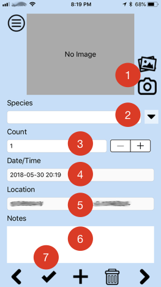
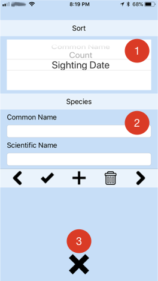

Working with Sightings

- (Optional) Include a picture from your photo library or use the camera on your phone.
- Enter the name of the species or select the species from the list.
- Enter the number of animals with the number pad or the -/+ buttons.
- Date and time is set automatically.
- Location is set automatically from the phone's GPS.
- (Optional) Enter any additional notes for your sighting.
- Save the sighting.
- You can navigate through your sightings by tapping the buttons or swiping.
You can change the photo, species, count, or notes after saving the sighting.
The + button is used to add a new sighting.
Once the sighting is saved, the species that was entered will be added to the list for future use.
Tap the to delete the currently displayed sighting or hold it down to delete all sightings.
Menu
Click the to open configuration and export options.
 opens the configuration screen.
opens the configuration screen.- Export all sightings to CSV for spreadsheets and statistics.
- Export all sightings to KML for mapping.
- Export all sightings to a simple PDF report.
Configuration

- Choose the Sort column. This is used to sort the CSV export and determine the name for points in the KML export.
- Edit your list of species including:
- Common Name
- Scientific Name
- Tap the X to return to the main screen.